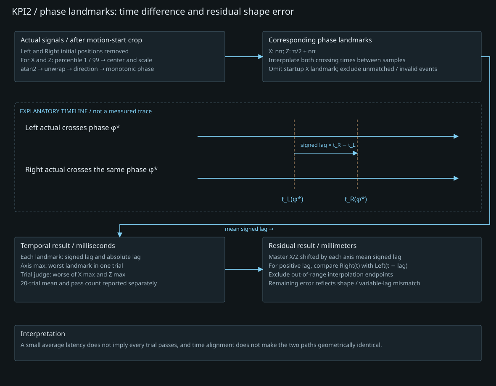

동기 RMSE
0.615 mm20회 평균 · 기준 ≤ 1 mm
0 → 1 mm 기준선
20 / 20회 기준 충족
Dual-Arm KPI Validation
2025.12 ~ 2026.06 · 시험 환경 구성 · 측정 · 결과 분석
Dual NURI · D405 · D435IF · Python
01 / METHOD
양팔에 공통 원궤적을 주고 움직임의 상대적인 위치 차이를 평가했습니다. 개별 팔의 실제 자세와 목표 자세 사이 오차는 추종 오차이고, 두 팔 움직임 사이의 오차는 동기 오차입니다. 한 지표의 통과로 다른 지표까지 충족했다고 판단하지 않았습니다.
카메라 수집 환경은 D405·D435IF의 USB 포트·허브·케이블·영상 조건을 시험해 구성하고 입력을 확인했습니다.
02 / LATENCY
Master의 실제 TCP 움직임을 관측해 Slave 목표를 만드는 추종 구조에 선행 보상을 적용했습니다. 원궤적에서 대응하는 위상 지점의 통과 시각 차로 지연을 계산했습니다. 최종 시험의 회차 판정값은 X/Z 최대 지연 중 큰 값이며, 20회 평균 48.969 ms는 이 회차 판정값들의 평균입니다.
선행 보상은 실행 시점의 처리이고, 분석에서 시간축을 정렬한 뒤 남는 위치 잔차와는 다릅니다. 초기 시험과 최종 시험의 측정 정의도 달라 서로 직접적인 개선율로 계산하지 않았습니다.
03 / RESULTS
이력서 보고값입니다. 확보된 별도 재시험 자료와 집계가 달라, 아래 그래프는 원자료 재계산 결과가 아닌 이력서 수치 요약으로 제시합니다.
20회 평균 · 기준 ≤ 1 mm
0 → 1 mm 기준선
20 / 20회 기준 충족
20회 평균 · 기준 ≤ 50 ms
0 → 50 ms 기준선
15 / 20회 충족 · 5회 초과
평균값과 기준 충족 횟수의 요약입니다. 회차별 측정값을 임의로 생성한 그래프가 아닙니다.
EVIDENCE & IMPLEMENTATION
두 시험은 입력 구조가 다릅니다. 동기 시험은 양팔에 같은 원형 상대 목표를 전달하고, 지연 시험은 Master의 실제 움직임을 관측해 Slave 목표를 만듭니다. 같은 원궤적이라는 이유로 지연 경계와 정밀도 결과를 합치지 않습니다.
| 기록에 확인된 시험 구성 | 설정 | 해석 |
|---|---|---|
| 장비·인터페이스 | NURI 5S 양팔 · IndyDCP3 · TCP/IP | 동일 제어기의 양팔 상태를 읽고 팔 인덱스로 명령 전달 |
| 원궤적 | XZ 평면 · 반지름 100 mm · 주기 5 s · 시계 방향 | 시작점 기준 누적 상대 목표; 회전 목표는 0 |
| 반복 | 5바퀴 × 20회; 회차당 25초 | 각 회차 시작 위치로 복귀하고 도달 확인 |
| 명령·기록 | 60 Hz / 100 Hz 설정 | 목표 주기이며 실측 servo rate 또는 시간 정확도 보장이 아님 |
위 조건은 아카이브의 재시험 실행 기록에서 확인했습니다. 이력서의 동기 RMSE 0.615 mm 집계와 동일한 20회 원자료인지의 연결은 추가 확인이 필요하므로, 조건표가 해당 집계를 재계산·입증한다고 표현하지 않습니다.

각 팔의 상대변위: d_R(t) = p_R(t) − p_R(0)
d_L(t) = p_L(t) − p_L(0)
동기 오차: e_sync(t) = d_R(t) − d_L(t)
동기 RMSE = sqrt(mean(||e_sync(t)||²))
개별 추종 오차: actual TCP − 해당 팔의 controller desired TCP각 팔의 초기 위치만 빼서 설치 간격에 해당하는 고정 offset을 제거합니다. 두 궤적을 임의로 회전·이동시켜 최적으로 포개는 것과 구분합니다. 한 회차의 RMSE가 1 mm 이하라는 것과 그 안의 모든 순간 오차가 1 mm 이하라는 것은 다릅니다.
XZ 실제 위치에서 중심과 축별 반폭을 정규화하고 atan2·unwrap으로 원 위상을 복원합니다. 두 팔의 같은 위상 landmark를 통과한 인접 샘플을 찾고 선형보간으로 시각을 계산합니다. 지연은 Slave 통과 시각 − Master 통과 시각입니다. 샘플 사이 보간이 센서 시각 정확도를 높였다는 의미는 아닙니다.

최종 지연 판정은 회차별 X/Z landmark 최대 절대 지연 중 큰 값입니다. 48.969 ms는 이 회차 판정값 20개의 평균이며, 전체 event의 RMS나 단순 전송 시간 차와 다릅니다. 15회 통과·5회 초과를 평균값과 함께 봅니다.
D405·D435IF의 USB 포트·허브·케이블·영상 조건을 시험해 수집 구성을 선정하고 입력을 확인했습니다. 이 작업은 시험 환경 구성 경험으로, 카메라 영상이 위 TCP 기반 RMSE·지연 계산의 직접 계측 입력이었다고 표현하지 않습니다.
기록 근거: 양팔 KPI 시험의 측정 정의와 반복 기록 ↗
04 / LIMITATIONS
동기 RMSE는 20회 모두 1 mm 이하였습니다. 지연은 평균이 50 ms 이하였지만 5회가 기준을 넘었습니다. 통계만으로 특정 회차의 초과 원인을 OS 지연이나 통신 손실로 단정하지 않았습니다. 동일 시험 조건과 회차 판정 정의를 유지한 반복 확인이 필요합니다.
관련 기록: 기술 아카이브 ↗